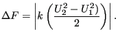
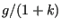
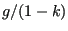
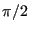
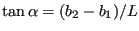
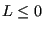
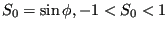

Next: Step Up: Fluid Section Types: Open Previous: Contraction Contents
The geometry of an enlargement is shown in Figure 126 (view from above). Similar to the case of a contraction, the fluid depth following an enlargement is calculated based on the depth before the enlargement (for supercritical flow) or vice versa (for subcritical flow) using the specific energy and Figure 124 can be reused by replacing “after contraction” by “before enlargement” and “before contraction” by “after enlargement”. For supercritical flow the fluid depth decreases and the velocity increases at an enlargement, for subcritical flow the fluid depth increases and the velocity decreases. For subcritical flow, for which the depth downstream of the enlargement is known, the enlargement (which is a contraction when looking upstream) may be so large that there is no intersection with the specific energy curve upstream (cf. Figure 125 in which “after contraction” is replaced by “before enlargement” etcetera). In that case the specific energy upstream of the enlargement is increased up to the point that the curve barely touches the given volumetric flow (for the critical depth). This will lead to supercritical flow within the enlargement and a subsequent jump downstream. Another way of looking at that is that the friction in the enlargement has to increase (by a smaller depth) in order to compensate the higher specific energy upstream of the enlargement.
The head loss at an enlargement can be approximated by:
 |
(207) |
For supercritical flow this amounts to replacing     by
by  by
by
 =
0., 0.25, 0.32, 0.46, 0.79 and
=
0., 0.25, 0.32, 0.46, 0.79 and  is defined by
is defined by
The following constants have to be specified on the line beneath the *FLUID SECTION,TYPE=CHANNEL ENLARGEMENT card:

the length is calculated from the coordinates of the end nodes belonging to the element).
(for this element the slope must be given explicitly and is not calculated from the coordinates of the end nodes belonging to the element)
Example files: channel9, channel11.